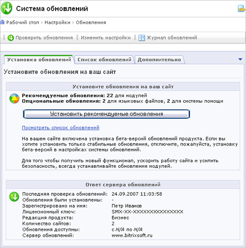
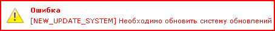
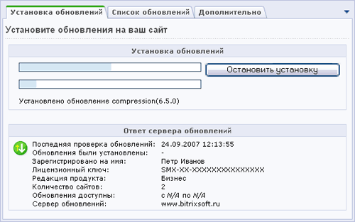
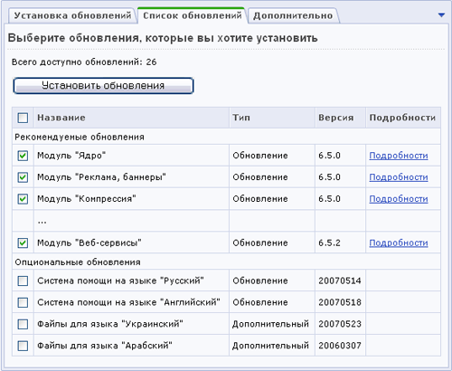
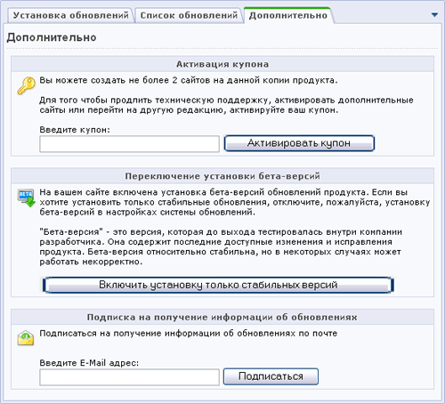

Если вы выбрали пошаговым режим обновления системы, то страница Система обновлений приобретает совершенно иной вид. Форма, представленная на этой странице, разбита на три закладки:
На данной закладке представлена информация об имеющихся рекомендуемых (обновления модулей) и опциональных обновлениях (языковые файлы, системы помощи). Кроме того, если выпущено обновление системы обновлений, то перед началом работы необходимо установить это обновление.

Процесс загрузки обновлений системы отображается с помощью двух индикаторов выполнения (поля типа "Progress Bar").

На данной закладке в виде таблице представлен список всех обновлений. Используя колонку флажков таблицы, вы можете указать необходимые обновления для установки.

Активация купонов на дополнительные сайты, включение/отключение установки бета-версий, а также подписка на получение информации об обновлениях по почте производится на данной закладке.

| © «Битрикс», 2001-2008, «1C-Битрикс», 2008 | 1С-Битрикс: Управление сайтом |